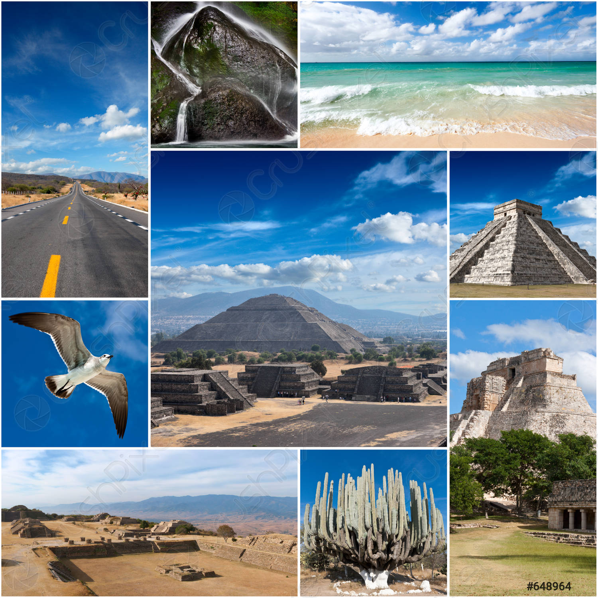
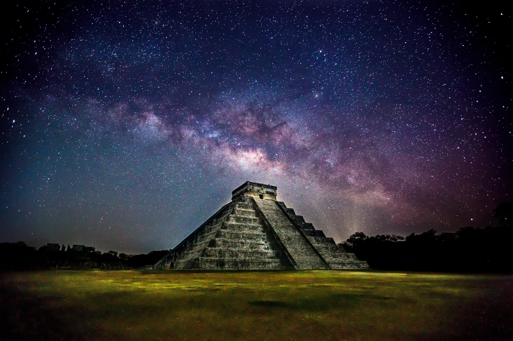

GALLERY



Chichén Itzá
Location
Chich é n Itz á was a sacred city of pyramids and temples. The Mayans designed their temples in Chich é n Itz á to be used as calendars and for rituals. They were made to track celestial events and the Mayans displayed an extraordinary knowledge of astronomy and mathematics in their construction. Is El Castillo the same as Chichen Itza El Castillo — in Spanish, “the castle” — looms at the center of Chich é n Itzá, a 79-foot pyramid of stone. Also known as the Pyramid ofKukulk á n, the structure embodies Mayan myth along with natural astronomical cycles. The phenomenon that El Castillo is famous for occurs twice each year, at the spring and fall equinoxes. What is under El Castillo at Chichen Itza? Researchers discovered an enormous cenote (also known as a sinkhole) beneath the 1,000-year-old temple of Kukulc á n. The forming sinkhole beneath the temple is approximately 82 by 114 feet (25 by 35 meters) and as many as 65 feet (20 meters) deep. The water filling the cavern is thought to run from north to south.
Researchers discovered an enormous cenote (also known as a sinkhole) beneath the 1,000-year-old temple of Kukulc á n. The forming sinkhole beneath the temple is approximately 82 by 114 feet (25 by 35 meters) and as many as 65 feet (20 meters) deep. The water filling the cavern is thought to run from north to south.
Roughly all sources agree that from approximately 550 AD to 800 AD, Chichen Itza existed mainly as a ceremonial center for the Maya civilization. The area was then largely abandoned for about a hundred years (no one knows reason ), to be resettled around 900 AD again.
The name Chichen Itza is a Mayan language term for “at the mouth of the well of the Itza.” The Itza were an ethnic group of Mayans who had risen to power in the northern part of the Yucatan peninsula, where the city is located.19-Feb-2018
Image result for chichen itza amazing facts Chichen Itza is home to a number of architectural and natural wonders, including El Castillo, the Great Ball Court, the Temple of the Warriors, the Sacred Cenote, and more.

OFFER CLOSES SOON

 WonderLandTravels WonderLandTravels
WonderLandTravels WonderLandTravels